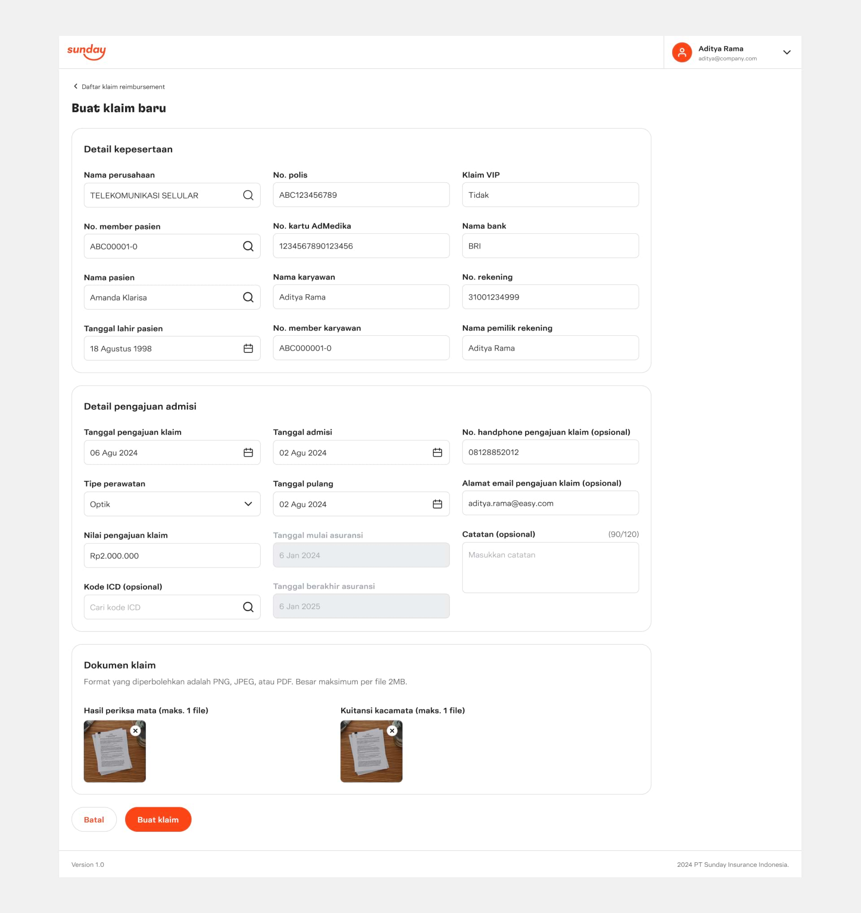

Role
Design and research
Sunday is a fully-integrated sales and services insurtech company that uses AI and digital platforms to offer personalised insurance products and services that suits all types of individual and business risks. The project was initiated due to the inefficiency of the existing insurance claim process that used multiple spreadsheets and documents to assess incoming claims, track claims processing status, and delegate claim assignments. These issues resulted in longer claim processing times and lower claim processing rates for the claims team.

Sunday's existing claim management system relies on inefficient manual processes, such as spreadsheets and documents. This has led to slow claim processing times, negatively impacting customer satisfaction and operational efficiency.
Prior to the kickoff, we had discussions with the head of claims team and development director to discuss the plan of improving the existing claim process to be more efficient. After discussions with the team, we concluded that the most efficient way to improve the process would be to create a centralized platform, namely claim middleware. We highlighted key pain points of the existing claim process based on the focus group discussions with the claims team.
Our goal was to develop an MVP claim management platform for Sunday Insurance Indonesia. This platform will provide Sunday claims team with easy access to assess incoming claims, track claims processing status, and delegate claim assignments.
Three distinct user roles will use this platform: claim admins, claim assessors, and heads of claims. Each role will have varying levels of access to platform features with heads of claims possessing full access, while admins and assessors are given limited access, primarily for reviewing and processing claims. The majority of claims come from the after-sales service app, known as Jolly super app, while a smaller portion are received via emails and WhatsApp messages to customer service.
During the project, I was responsible for designing the end-to-end claim processing workflows from pre-assessment, assessment, to assessment results. Furthermore, I facilitated team understanding of these complex workflows by providing and organizing detailed annotations using charts and diagrams.
Research methods used during the collaboration included journey mapping, usability testing, and user interviews.
Claim list page, from where the claims team can view the list of submitted claims, add new claims, and adjust claim settings Claim details page, which allows the team to review claim information and process the claim Client configuration, from where clients can be categorized as type 1 (can be processed directly) or 2 (need AdMedika review) Claim delegation, which was one of the most requested features during the pilot phase  Creating claim, which allows the team to create a new claim if there are claims submitted outside of Jolly super app User flow for claim submission via Jolly super app, from submitting a claim to viewing claim history and status
User flow for claim submission via Jolly super app, from submitting a claim to viewing claim history and status